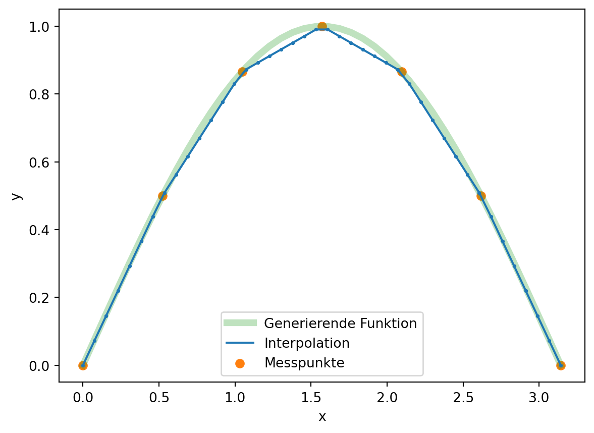
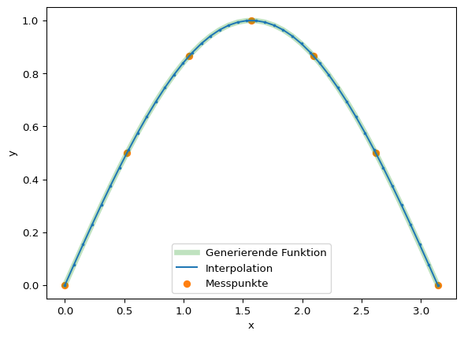

# Erzeugung von Messpunkten
n = 7
xi = np.linspace(0, np.pi, n)
yi = np.sin(xi)4 Splines
Polynominterpolation versucht eine globale Modellfunktion zu finden. Jedoch eignen sich Polynome mit hohen Graden im Allgemeinen nicht für eine Interpolation vieler Punkte. Einen anderen Ansatz verfolgen Splines (auch: Polynomzug), welche mehrere, niedrige Polynome zur Interpolation vieler Punkte verwenden. Die Polynome haben typischerweise Grade zwischen eins und drei.
4.1 Definition
Für \(n+1\) Messpunkte \((x_i, y_i)\) kann eine Splinefunktion \(s_k\), hier ein Polynomspline, wie folgt definiert werden:
- Vorausgesetzt ist, dass die Messpunkte sortiert sind, d. h. \(x_0 < x_1 < \cdots < x_n\).
- Für jedes \(i = 0\dots n − 1\) ist \(s_k\) ein Polynom vom Grad \(k\) auf dem Intervall \(\left[x_i , x_{i+1}\right]\)
- \(s_k\) ist auf \(\left[x_0 , x_n \right]\) \((k − 1)\)-mal stetig differenzierbar
Beispiele:
- \(k = 1\): Polygonzug
- \(k = 3\): kubische Polynomsplines (B-Splines)
4.2 Kubische Splines
Die in der Praxis häufig eingesetzten kubischen Polynomsplines \(s_3\) (\(k = 3\)) haben folgende Eigenschaften:
- \(s_3|\left[x_i,x_{i+1}\right] = \beta_0 +\beta_1 x + \beta_2 x^2 + \beta_3 x^3\)
- \(s_3\) ist zweimal stetig differenzierbar auf \(\left[x_0,x_n\right]\), also insbesondere an den Stützpunkten \(x_i\) der Messpunkte.
Die Koeffizienten \(\beta_i\) werden wie folgt bestimmt:
Aus den \(n + 1\) Messpunkten ergeben sich \(n\) Intervalle, d. h. mit jeweils vier Koeffizienten sind es insgesamt \(4n\) Koeffizienten.
Exakte Darstellung der Messpunkte (\(n + 1\) Gleichungen), d. h.: \(s_3(x_i) = y_i\)
Glattheitsbedingungen an den inneren Messpunkten (\(i=1 \dots n-1\)), mit jeweils (\(n − 1\) Gleichungen): \[ s_3'(x_i)_- =s_3'(x_i)_+ \] \[ s_3''(x_i)_- =s_3''(x_i)_+ \] \[ s_3'''(x_i)_- =s_3'''(x_i)_+ \]
Damit sind es \(4n − 2\) Gleichungen für \(4n\) Koeffizienten.
Um die beiden fehlenden Gleichungen zu finden bzw. zu bestimmen, werden Randbedingungen oder Abschlussbedingungen benötigt. Die gängigsten Bedingungen sind:
natürliche Splines: die Krümung am Rand verschwindet, d. h.: \[ s_3''(x_0) = s_3''(x_n) = 0 \]
periodische Splines: die Steigung und Krümung ist an beiden Rändern gleich \[ s_3'(x_0) = s_3'(x_n) \]
\[ s_3''(x_0) = s_3''(x_n) \]
- Hermite Splines: die Steigungen am Rand werden explizit vorgegeben (hier durch \(u\) und \(v\)) \[ s_3'(x_0) = u \] \[ s_3'(x_n) = v \]
4.3 Anwendung
Im Folgenden werden zwei Beispiele, \(s_1\) und \(s_3\), für die Erstellung von Splines mit Python vorgestellt.
Für die \(s_1\) Splines, kann die Funktion np.interp() verwendet werden. Sie führt eine lineare Interpolation zwischen gegebenen Wertepaaren durch.
# Wertebereich für die Visualisierung der Interpolation
x = np.linspace(0, np.pi, n*6)
y = np.sin(x)# Interpolation
y_s1 = np.interp(x, xi, yi)plt.plot(x,y, alpha=0.3, color='C2', lw=5,
label='Generierende Funktion')
plt.plot(x, y_s1, color='C0', label='Interpolation')
plt.scatter(x, y_s1, s=3, zorder=3, color='C0')
plt.scatter(xi, yi, color='C1', label='Messpunkte')
plt.xlabel('x')
plt.ylabel('y')
plt.legend();
plt.show()
Die \(s_3\) Splines können mit Funktionen aus dem scipy-Modul berechnet werden. Dazu werden zunächst die Koeffizienten bestimmt (scipy.interpolate.splrep) und diese ermöglichen die gewünschte Auswertung, welche mit der Funktion scipy.interpolate.splev vorgenommen werden kann.
import scipy.interpolate as sis3 = si.splrep(xi, yi)
y_s3 = si.splev(x, s3)plt.plot(x,y, alpha=0.3, color='C2', lw=5,
label='Generierende Funktion')
plt.plot(x, y_s3, color='C0', label='Interpolation')
plt.scatter(x, y_s3, s=3, zorder=3, color='C0')
plt.scatter(xi, yi, color='C1', label='Messpunkte')
plt.xlabel('x')
plt.ylabel('y')
plt.legend();
plt.show()